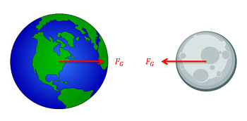
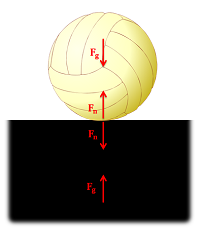

Newton's Third Law states "For any action, there is an equal and opposite reaction." By "action" Newton meant a force, so for every force one body exerts on another body, that second body exerts a force of equal magnitude but opposite direction back on the first body. Since all forces are exerted by bodies (either directly or indirectly), all forces come in pairs, one acting on each of the bodies interacting.

The gravitational pull of the earth and moon represent a Newton's Third Law pair. The earth exerts a gravitational pull on the moon, and the moon exerts an equal and opposite pull on the earth. Image adapted from Public Domain images, no authors listed.
Though there may be two equal and opposite forces acting on a single body, it is important to remember that for each of the forces a Third Law pair acts on a separate body. This can sometimes be confusing when there are multiple Third Law pairs at work. Below are some examples of situations where multiple Third Law pairs occur.

This volleyball resting on a surface has two pairs of Third Law forces. The first consists of the gravitational forces (one force on the ball and one force on the ground). The second consists of the normal forces at the point of contact (one force on the ball and one force on the ground). Image adapted from Public Domain image, no author listed.
If we ignore the weight of the two objects, this clamp will also have two pairs of Third Law forces. The first will be a set of normal forces at the top point of contact (one force on the wood and one force on the clamp) and the second will be another set of normal forces at the bottom point of contact (one force on the wood and one force on the clamp) Image adapted from Public Domain image, no author listed.